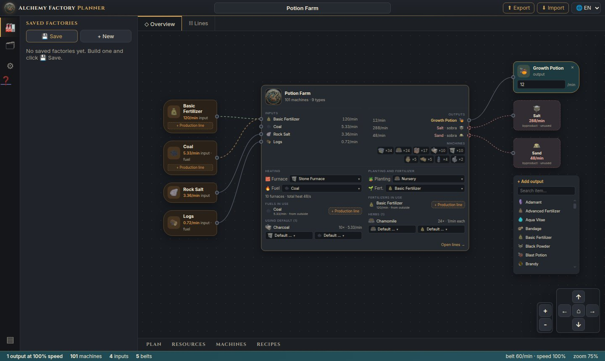
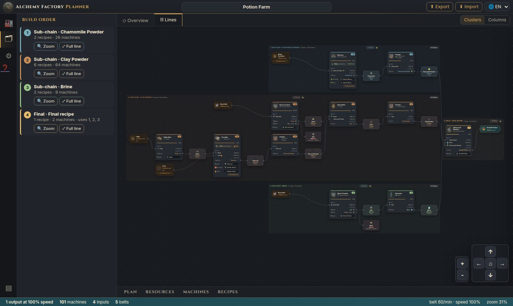
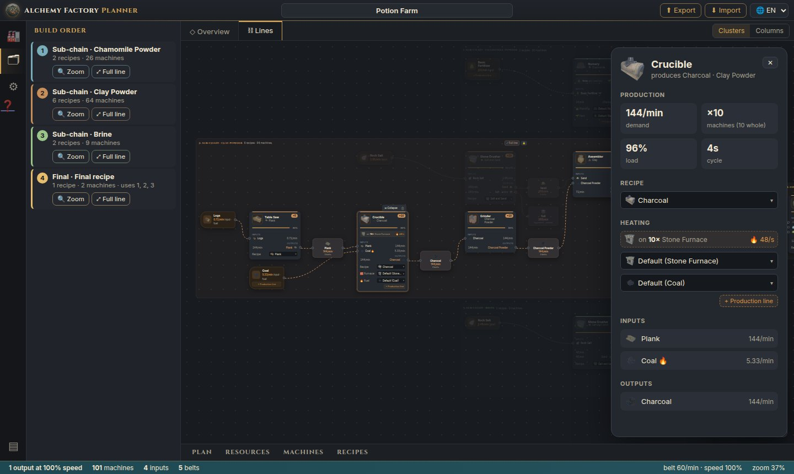
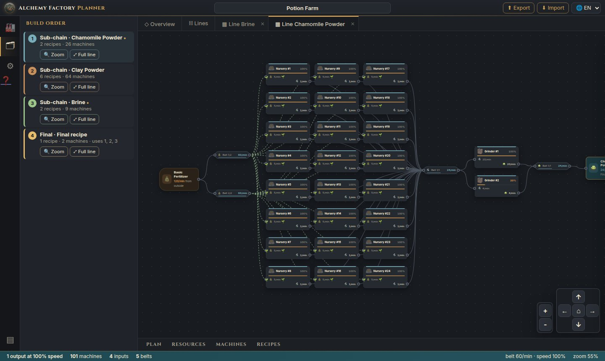
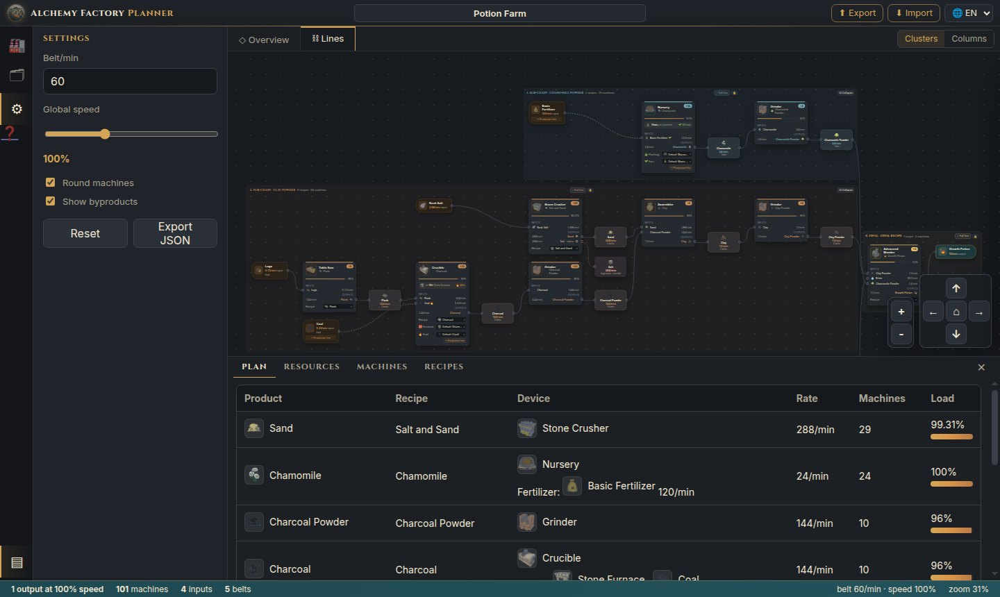
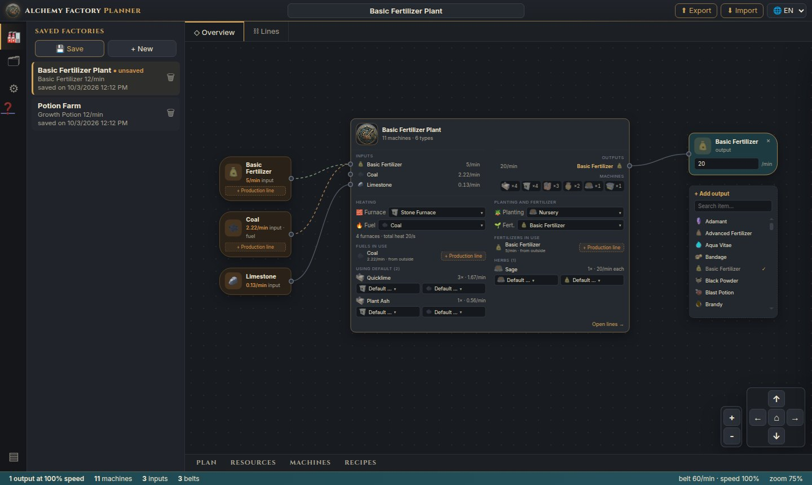

How to use Alchemy Factory Planner
The planner works out how many machines, belts, furnaces, fuel and fertilizer your factory needs to make what you want, and shows the order to build it in. This guide walks through each part of the tool.
1 Quick start
- Choose what to make. In the ◇ Overview tab, use + Add output, search for the item and click it.
- Set the target. In the output node, type how many items per minute you want.
- See the factory. Open the ⛓ Lines tab to see machines, belts and the build order.
- Keep it. Click 💾 Save in the sidebar, or share the page link.
The app opens empty. Everything you build is stored in the page address (?fabrica=…), so reloading loses nothing.
2 The screen
The screen is split into fixed areas, with the factory diagram in the middle.

- Title bar
- Factory name (click to edit), the ⬆ Export and ⬇ Import buttons and the language selector.
- Activity bar
- 🏭 saved factories · 🗂 build order · ⚙ settings · ❓ this tutorial · ▤ tables panel. Clicking the active icon collapses the sidebar.
- Tabs
- ◇ Overview (inputs and outputs), ⛓ Lines (every machine) and one ▦ Line … tab for each block you open.
- Status bar
- Outputs, total machines, inputs, belt lines, speed and zoom.
Moving around the diagram: drag the background to pan, use the mouse wheel to zoom, the + − buttons and arrows in the corner, and ⌂ to fit everything.
3 Create the factory (Overview tab)
The Overview tab shows the factory as a single block: what comes from outside on the left, the Factory node in the middle and the outputs on the right.
- Add an output: in the + Add output node, search for the item and click it. You can have several outputs at once.
- Target: edit the items/min right in the output node. ✕ removes the output.
- Factory node:
- Inputs: what comes from outside, and in purple the supplies produced here.
- Outputs and byproducts.
- The machine types with their counts.
- The heating, planting and fertilizer defaults.
- Name: click the title at the top of the screen to name the factory.
Click the Factory node (or Open lines →) to go to the Lines tab.
4 Furnaces and fuel
Hot machines (Crucible, Kiln, Athanor, Alembic, Iron Smelter…) sit on top of a furnace, one per physical machine, and the furnace is what burns the fuel.
- Factory default: in the Factory node, under Heating, choose the default furnace (Stone or Blast Furnace) and fuel.
- Manual choice: each machine can use a different furnace or fuel, through the selector on the node itself, in the details panel or in the Factory node list. The Default (…) option makes it follow the default again. Changing the default never changes manual machines.
- Production line: by default the fuel comes from outside. If it can be crafted, + Production line adds the chain that makes it to the factory, and ✓ Own line removes it.
Cycles: if a fuel line needs that same fuel (e.g. Charcoal Powder burned in the Crucible that makes Charcoal), the line also produces what it consumes itself. The loop is drawn as a dotted purple line.
5 Planting and fertilizer
Herbs can be planted in two ways, chosen in the Factory node (default) or per herb (manual):
| Nursery | Seed Plot | |
|---|---|---|
| Seed | Stays planted, not consumed | Consumed |
| Fertilizer | Consumed continuously | Not used |
| Speed | Set by the fertilizer | Recipe time |
In the Nursery, the fertilizer makes a big difference. Example with 24 Chamomile/min:
- Basic Fertilizer: 1 herb/min per Nursery, so 24 Nurseries and 120 fertilizer/min.
- Advanced Fertilizer: 12 herbs/min per Nursery, so 2 Nurseries and 24 fertilizer/min.
Fertilizer can also get a + Production line, just like fuel.
6 The Lines tab

- Nodes: each recipe is a machine node, with the icon, the count (
×10), the load and the inputs and outputs per item. Between two machines sits the node of the item being carried, with its rate and number of belts. - Clusters or Columns (top right corner):
- Clusters splits the factory into blocks, one per ingredient of the final recipe, plus one block for each fuel or fertilizer with its own line.
- Columns shows a single graph.
- Build order (🗂): lists the blocks in the order they should be built, with 🔍 Zoom and ⤢ Full line.
- Blocks:
- A click zooms into the block.
- ⊟ Collapse hides the inside.
- The 🔒 lock pins the position (default). With 🔓 you can drag the block and its nodes.
- Highlight: hover a node to highlight its path to the inputs and outputs.
7 Machine details

The panel shows:
- the demand, the machines (exact and whole), the load and the recipe cycle;
- the recipe, furnace, fuel and fertilizer, all editable;
- the inputs and outputs with their rates.
Changing anything recalculates the factory right away. If machines are added or removed, they flash and a notice sums up the change.
8 Full line: machines and belts

⤢ Full line opens the block in its own tab, showing the physical layout:
- Machines: each physical machine is a node (Grinder #1, #2…), with its load. A partial machine is drawn dashed.
- Belts: each belt is a node. 144/min on a 60/min belt becomes 3 belts of 48.
- Block borders: what comes from outside shows up as an input, and what leaves goes to the next block, the final product or byproducts.
You can open several lines at once. Each tab remembers its own zoom, and ✕ closes it.
9 Tables and settings

- Bottom panel (▤ or the tabs):
- Plan: machine table.
- Resources: raw materials and byproducts.
- Machines and Recipes: catalogs.
- Settings (⚙):
- belt capacity (items/min);
- global speed;
- round machines up to whole numbers;
- show byproducts;
- Reset and Export JSON.
10 Save and share

- Saved factories (🏭):
- 💾 Save stores the factory in the browser (updates it if it already exists).
- + New starts an empty factory.
- Click a factory to open it, with the tabs that were open. 🗑 deletes it.
- Code: ⬆ Export generates an
AFP1.…text with the whole factory. ⬇ Import rebuilds the factory from it. - Link: the page address always holds the current factory (
?fabrica=…). Send the link so someone can open exactly the same factory.
11 How the math works
Recipe, machine, heat and nutrient data come from the Alchemy Factory Codex.
- Machines
- demand ÷ output per machine (recipe output × 60 ÷ time × speed). With Round, each recipe's total is rounded up only once.
- Fuel
- (machine heat + furnace heat) × machines × 60 ÷ the fuel's heat value.
- Fertilizer
- herbs/min per Nursery = 60 × fertilizer flow ÷ herb nutrients; fertilizer/min = herbs × nutrients ÷ fertilizer value.
- Belts
- item rate ÷ belt capacity, rounded up.
- Cycles
- solved by repeating until stable; if they can't sustain themselves, the consumption comes from outside and the factory warns you.
12 Tips
- Pick your fuel carefully: heat value matters a lot. Charcoal Powder is worth 48 and Coal 540, so a weak fuel may need dozens of machines just to feed the furnaces.
- Fertilizer: Advanced cuts the number of Nurseries a lot. Compare before deciding.
- Byproducts: shown dashed in red. They point to items you can use in another factory.
- Reload: if something looks outdated after an app update, reload with Ctrl+Shift+R.